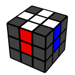
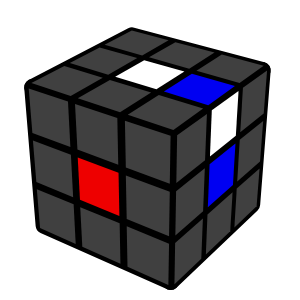
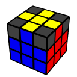

Cube Notation
Cube notation provides a standardized way to describe each move you
can do on the Rubik's Cube. It is used to scramble the cube, to
reconstruct solves or most commonly to read algorithms.
Basic Moves
Each uppercase letter means to turn that side of the cube clockwise,
as if you were facing it. An apostrophe ' after the letter (prime)
means to turn the face counterclockwise. 2 after the letter means to
turn the face 180°.
Rotations
Rotating the entire cube is displayed by the letter around which axis
it rotates
How To Solve The Rubik's Cube
Step 1 - White Cross

Hold the white center piece on top, and find an edge in the bottom
layer that has white on it. Look at the edge piece's other color, and
turn the bottom layer so the edge is under the center of the same
color. Turn that face to bring the edge piece to the top.
Anytime an edge piece is flipped (example below), fix it by doing the
following moves: R' U F' U'

Solve all 4 of the white edge pieces to make a cross. Make sure you
always look at both colors on each piece so that you end up with the
side colors matching as well.
Step 2 - First Layer
With the cross on the bottom, find a corner piece in the top layer
with white on it. Turn the top layer so the surrounding centers match
the colors on the corner like the image below.
Hold the cube so the corner piece is on the front/right, and repeat
the right handed 4-moves (R U R' U') until this
corner is solved.
Repeat until all of the first layer corners are solved. If you find a
white corner incorrectly stuck in the bottom layer, you can bring it
into the top layer by holding it on the front/right and doing the
right 4-moves.
Step 3 - Second Layer
Find an edge piece in the top layer without yellow as either of its 2
colors. Turn the top so that it matches a center. Face the piece and
check if the top color matches the right center or left center.
If it matches the right side, do the following moves:
U R U R' U' F' U' F
If it matches the left side, do the following moves:
U' L' U' L U F U F'
Step 4 - Yellow Cross
Hold the cube to match one of the following (ignore the corner
pieces):
Then do the following moves: F R U R' U' F'. If the
cross is not solved yet, hold the cube to match the new case and
repeat.
Step 5 - Yellow Edges

Turn the top face until 2 cross pieces match the side color (if all 4
match, you have finished this step!)
Hold the 2 matching edges at the back/right. If they are across from
each other, hold them in any way.
Then do the following moves: R U R' U R U2 R'. Turn
the top to match all 4 colors. If you can only match 2 colors, then
repeat this step.
Step 6 - Yellow Corners

A corner is in the correct position if all 3 colors on the piece match
the surrounding colors. Examples of corner pieces in the correct
position:
If 1 corner is correct, hold it in the front/right (if 0 are correct,
hold any corner in the front/right). Then do the following moves:
U R U' L' U R' U' L
Step 7 - Finish Cube
Turn the cube over so that the unsolved corners are all in the bottom
layer. You may have 2, 3, or 4 unsolved corner pieces.
Repeatedly do the 4-move sequence (R U R' U') until
the front/right corner is solved (has yellow on the bottom). Then turn
the bottom layer (not the whole cube) to bring an unsolved corner to
the front/right. Repeat until the whole cube is solved.
Congrats on solving the Rubik's Cube!